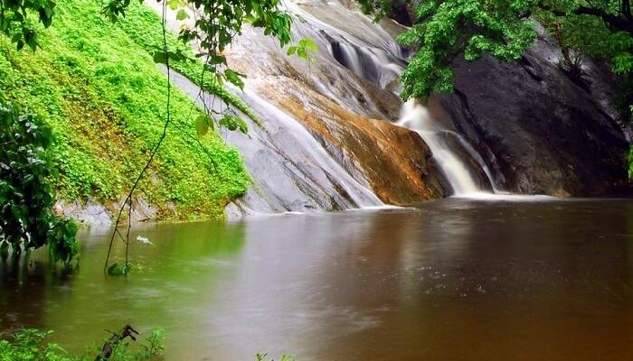

Palakkad or Palghat, situated in the foothills of the Nilgiris, is widely heralded as the gateway to Kerala. A natural break in the mountains, the Palakkad Gap connects Kerala to Tamil Nadu. It holds tremendous historical importance and with the blessing of the monsoons, magically turns fertile green. We bring you some of the best places to visit in Palakkad which include stunning natural wonders and ancient architecture.
Top Places To Visit In Palakkad
Palakkad Fort – To Revisit History

The well-preserved Palakkad Fort features on all Palakkad sightseeing tours as it introduces guests to the history of Palakkad right from the rule of Zamorin to the Mysore Sultans and eventually the British. Built-in 1766 A.D by Hyder Ali, it is also known as the Tipu Sultan Fort and is among the highest visited Palakkad tourist places. Distance from Palakkad: 4.4 KM Location: Palakkad Highway, Kenathuparambu, Kunnathurmedu Timings: 8 AM to 6 PM Entry cost: INR 15 per person
Dhoni Waterfalls – The Magical Sounds

Dhoni is a tiny hamlet near Palakkad and best known for its natural wealth. Paying a visit to these falls is truly one of the magical things to do in Palakkad. The Dhoni waterfalls and the forest combined together offer a reprieve from the heat and humidity of Palakkad. It is one of the best places to visit in Palakkad for a day trip. The forest is a part of western ghats and is ideal for bathing. This is one of the most beautiful waterfalls in Palakkad. Distance from Palakkad: 15 KM Location: Puthuppariyaram, Palakkad, Kerala 678591 Timings: 10:30 AM to 3 PM Entry cost: INR 100 per person
Malampuzha Dam – Jaw Dropping Views

The Malampuzha Dam has become one of the best tourist attractions in Palakkad. Opened in 1955, this beautiful park and dam have manicured lawns and still waters perfect for a visit during the monsoons. It is the only one among Palakkad tourist places to have a functioning ropeway! Distance from Palakkad: 8KM Location: Malampuzha Dam, Kerala 678651 Timings of ropeway: 10:00 AM to 6:00 PM Entry cost: INR 10 per person